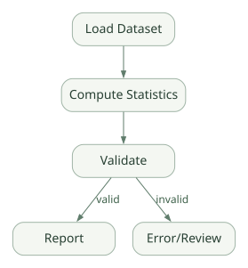

흐름과 복구 / 단원 05
Executor와 Edge로 경로 명시하기
Superstep·Graph/Functional·멀티에이전트 패턴
먼저 연결해 보기
Workflow는 Executor가 메시지를 처리하고 Edge가 다음 대상으로 전달하는 그래프 실행 체계입니다. Agent를 Executor 안에 넣어 정해진 절차와 모델 판단을 결합할 수 있습니다.
Superstep의 동기화, Graph와 실험적 Functional 표현, Sequential·Concurrent·Handoff 등의 차이를 순서대로 확인하세요. Group Chat의 각 Agent가 같은 Session 객체를 공유한다고 가정하지 않는 것도 중요합니다.
읽는 관점병렬 결과를 어디서 합치고, 다음 단계를 어떤 조건으로 실행하는지 확인하세요.
12. Workflow: Agent Loop와 완전히 다른 실행 개념#
Workflow는 단순히 Agent를 여러 개 붙인 것이 아니다. Executor가 메시지를 받아 실행하고, Edge가 다음 실행 대상으로 전달하는 그래프 런타임이다. [D09]
12.1 세 핵심 객체#
- Executor: 함수 또는 Agent를 포함한 일 수행 단위. 입력과 출력의 타입을 가질 수 있다.
- Edge: 한 Executor의 출력을 다른 Executor의 입력으로 보내는 연결.
- Workflow: 그래프 정의, 상태·스케줄·이벤트·완료 조건을 관리.
넓은 도식은 가로로 이동하며 읽을 수 있습니다. 도식 크게 보기 ↗

원문에 수록된 학습용 도식입니다. 노드·화살표·분기 라벨을 보존해 다시 배치했습니다. 세부 조건과 예시·구현의 구분은 앞뒤 본문을 함께 읽으세요.
도식 원문 보기 (Mermaid)
flowchart LR
X[Load Dataset] --> Y[Compute Statistics]
Y --> Z[Validate]
Z -->|valid| R[Report]
Z -->|invalid| E[Error/Review]12.2 Superstep이란?#
공식 문서는 Python Workflow 엔진을 Pregel-like 실행으로 소개한다. 간단히 말하면 현재 단계에서 실행 가능한 Executor들이 작업을 수행하고, 생성된 메시지가 다음 단계에 전달되는 동기화 단위다. [D09][D13]
예를 들어:
Superstep 0: Start → Executor A에 데이터 준비
Superstep 1: Executor A 실행, B/C에 결과 전달 예약
Superstep 2: Executor B, C가 처리
Superstep 3: Join Executor가 결과 수집
Superstep 4: Report Executor 실행체크포인트는 일반적으로 각 Superstep의 작업이 완료된 시점에 저장된다. 따라서 Workflow Checkpoint가 SQL 트랜잭션처럼 모든 외부 부작용을 원자적으로 되돌리는 것은 아니다. [D10]
12.3 장점과 비용#
장점은 실행 경로, 상태 변화, 승인 위치, 재시도 조건을 코드로 명시할 수 있다는 것. 단점은 그래프·상태·타입·이벤트 관리 비용이 생긴다는 것이다. 단순 Q&A라면 일반 Agent가 더 적합할 수 있다.
13. Graph Workflow와 Functional Workflow 비교#
Python에는 두 가지 주요 표현 방식이 있다. 공식 문서는 Functional Workflow가 실험적이라고 설명한다. [D09]
| 항목 | Graph (WorkflowBuilder) |
Functional (@workflow/@step) |
|---|---|---|
| 제어 흐름 | 명시적 Edge와 Executor | Python의 if, for, asyncio.gather 등 |
| 주요 장점 | 타입 검증·가시성·분기 경로 | 기존 Python 함수 구조와 친숙 |
| 병렬 | Fan-out/Fan-in · Superstep | asyncio.gather() 등 |
| 이벤트 | Executor / Workflow 이벤트 | Decorated step 이벤트 |
| HITL | RequestInfoExecutor 등 |
ctx.request_info() |
| 복구 | Superstep 단위 | @step 결과 캐싱 등 |
| 성숙도 | 기본 Graph API | 실험적 기능 포함 |
13.1 WorkflowBuilder 최소 예시 — 공식 문서의 구성 패턴#
from agent_framework import WorkflowBuilder
# DataProcessor, Validator, Formatter는 개발자가 작성한 Executor라고 가정
processor = DataProcessor()
validator = Validator()
formatter = Formatter()
builder = WorkflowBuilder(start_executor=processor)
builder.add_edge(processor, validator)
builder.add_edge(validator, formatter)
workflow = builder.build()위는 공식 사용 패턴을 보여 주기 위한 코드 조각이며, DataProcessor 등 실제 클래스 구현은 생략했다. 즉 복사해서 곧바로 실행 가능한 완결 예제가 아니다. [D13]
13.2 타입과 Edge 조건#
Builder는 Executor의 입력/출력 타입 호환성을 검사하는 기능을 제공한다. Python 타입 힌트는 정적 계약을 명확하게 할 뿐 도메인 데이터의 정확성까지 보장하지 않는다.
- 타입 체크:
dict가 와야 할 자리에list가 전달되었는가? - 도메인 검증:
yield_pct=150가 불가능한 값인가? - 보안 검증: 이 사용자가 해당 라인 데이터를 볼 수 있는가?
세 가지는 독립적으로 검증해야 한다.
13.3 병렬 처리 시 주의#
두 Executor가 같은 메모리 상태, 임시 파일, DB 행을 변경한다면 동시성 충돌이 발생할 수 있다. 병렬 분석에서는 읽기 전용 입력, 독립 결과, Join에서 명시적 병합을 기본값으로 설계하는 것이 유리하다.
14. Multi-Agent Orchestration#
Agent Framework는 Sequential, Concurrent, Handoff, Group Chat, Magentic 패턴을 지원한다. [D14]
| 패턴 | 실행 방식 | 적합한 사례 | 주의할 점 |
|---|---|---|---|
| Sequential | 차례로 실행 | 조회 → 요약 → 검토 | 앞 단계 오류 전파 |
| Concurrent | 여러 Agent 병렬 | 각 공정 가설 독립 검토 | 비용·중복 결과·Join |
| Handoff | Agent 간 통제 이관 | 장비 전문가 → 소재 전문가 | 종료 규칙과 순환 |
| Group Chat | 공통 대화를 번갈아 진행 | 작성자·검토자·분석가 협업 | 반복 대화로 비용 증가 |
| Magentic | 관리자 Agent가 동적으로 배정 | 탐색적 복합 원인 분석 | 통제와 재현성 낮아질 수 있음 |
14.1 Graph 기반 Multi-Agent가 유리할 때#
각 Agent의 역할과 데이터 접근 범위를 분리할 수 있다. 예를 들어 DataAgent에게는 사내 데이터 조회 Tool, ExpertAgent에게는 기술 문서 검색 Tool, ReviewerAgent에게는 규칙 검사 Tool을 제공한다.
14.2 Group Chat의 세션 오해#
Group Chat에서 참여자들이 같은 Session 인스턴스를 공유하는 것은 아니다. 공식 문서는 각 Agent가 별도 세션을 유지하고 오케스트레이터가 발화를 전파해 문맥을 동기화한다고 설명한다. 서로 다른 Agent 유형이 같은 Session을 무조건 공유하면 상태 처리 불일치가 생길 수 있기 때문이다. [D15]
14.3 멀티에이전트로 만들기 전에 물어볼 질문#
- 전문가별로 서로 다른 Tool·보안 권한·프롬프트가 필요한가?
- 병렬 수행이 실제 지연 시간을 줄이는가?
- 분업 후 결과를 일관되게 검증할 수 있는가?
- 하나의 Agent에 서브루틴/Tool을 추가하는 것으로 해결되지 않는가?
- 서로 다른 모델이 만든 근거와 데이터 범위를 어떻게 합치는가?
권장: 단일 Agent로 기준선 평가 → 역할 분리가 효과적임을 확인한 뒤 Multi-Agent 확장.